About me!
hi im azzy im a child i really found an intrest in coding and i thought a good idea would be to learn web development first then get into actual game development. so over the past like couple months its been now that ive been learning html, this is my first public site. ever since i got my laptop for christmas ive been able to explore on some hobbies that ive wanted to try for a while, like 2d animation, 3d modeling and art, and development, working on this site has also gotten me to learn some more about making graphics and using different softwares to achieve what i want and i learned alot in doing so. i still prefer traditional art over digital cus its all im used to and it means more to me but i hope to get more comfortable with digital drawing soon! its been fun but time consuming to try these sofwares that im learning for the first time. i also like to crochet, sew, sculpt, cook, bake, and play games so obviously with all these ideas (and school on top of it(and soon a job probably)) and so little time its kinda hard to find time to learn ALLLLL these things and progress will be slower because of the ammount of things i want to do.. especially cus im learning it all for the first time! but my passion has always been with art and creativity soo i hope u like this site, its not much now but it will be updated as i learn more and stuff like that :3 4/3/24
what is this?
i basically wanted to make this site as a passion project and a place where people can go to see some things about me, maybe showcase some art, make a blog, and it all be in one place! i have alot of ideas for this site and this is just the beginning, so i hope you enjoy seeing it grow! 4/3/24
chatbox!
bloggg
4/6/24
my site is officially published! i have been working on this for about over a week, ive been coming home from school and just working on this site for like hours straight lol. and im really happy how its turned out, mind u this is just the beginning of what my site will be, im super excited to add more and more. im working on adding an art page. and i wanna know how to add autoplay music?? cuz youtube links dont work anymore :p, but anyways i hope u come back, also feel free to leave a msg in the chatbox! id love to hear from u guys!
site updates!
4/9/24
made a guestbook! and i finally FINALLY found a good music player! it mught not be autoplay but i still love it
4/8/24
i added this, and im adding a view counter! i hope it works, i also added a footer where u can see when i last updated the site! i also added more blinkies bc they are fun


 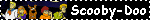
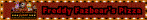
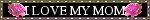
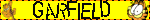
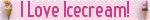
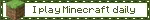
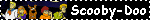
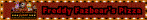
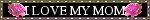
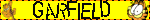
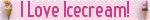
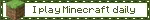

 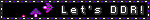
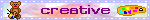
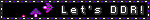
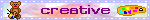

 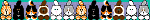
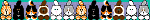